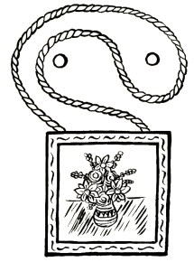
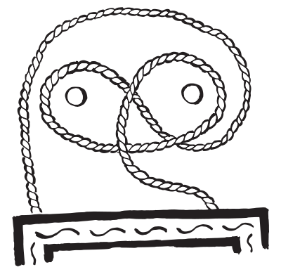

Occasionally, we get the opportunity to show our program off to passers-by at a fair or other public event. Here are some of the puzzling posters we have put together to give participants an idea of what teaching university-level maths to younger students is like.
Poster 1: Games with Sweets
Alice and Bob play a game. Starting with a pile of 100 sweets, they take turns removing (and eating) between 1 and 10 sweets, with Alice going first. The player who takes the last sweet wins. Who has a winning strategy and what is it?
Look at smaller piles of coins first and try to spot a pattern. Who can win if the pile consists of 1 coin? 2 coins? 3 coins?
One can arrive at this answer by looking at smaller piles first. If the starting pile consists of only one coin, A immediately wins by taking that coin away. The same for starting piles with 1 to 10 coins. Now, what if the starting pile has a size of 11? In that case, it does not matter how many coins A takes away, he will always leave between 1 and 10 coins, and B can then win the game. Now, if the pile has between 12 and 21 coins, then A can remove coins so that only 11 coins are left—and we have seen that this is lost for B. Using this idea, one arrives at the 11, 22, 33, 44, … pattern mentioned above.
Poster 2: Picture Hanging
If we hang a picture in the following way:

Removing the nail on the right will cause the picture to fall down. Figure out a way to hang the picture so that it falls down no matter which nail you remove.
Try to write down the path of the rope as a formula. To do this, call the left nail A and the right nail B. We trace the rope from start to end. If it circles A clockwise, we write a. If it circles A counter-clockwise, we write a−1. Use b and b−1 for circles around B. So, the formula for the picture from the poster would be aba−1.
What happens to the formula when a nail is pulled out?
The answer is shown in the following picture:

To see this, we use “rope formulas” as explained in the hint.
If we have a rope formula and pull out nail A, we can cross out all letters a and a−1 and get a rope formula for what remains. If we pull out nail A in the example from the poster (rope formula: aba−1), all that remains is b, i.e. the picture hangs on nail B. If we pull out nail B, all that remains in aa−1. One clockwise and one counter-clockwise revolution, which cancel each other out—so the picture falls down.
Trying to rearrange the letters a, a−1, b, and b−1, we find that the formula aba−1b−1 does what we want. If a and a−1 are crossed out, only bb−1 remains, which means the picture falls. Similarly if b and b−1 are crossed out.
And the picture hanging for this rope formula is shown in the picture. (“A-clockwise; B-clockwise; A-counter-clockwise; B-counter-clockwise”)